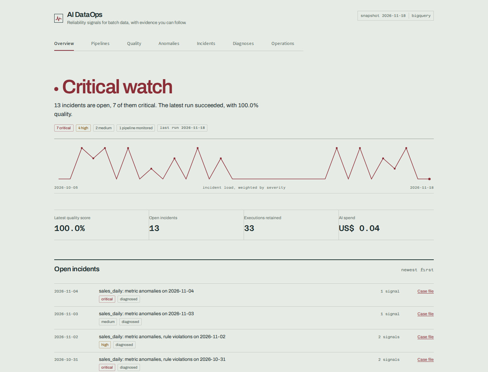

AI DataOps
Data observability and AI-assisted incident diagnosis for batch pipelines.
Pipelines fail quietly: a job returns success while it processed 40% fewer rows. AI DataOps records every execution, tests versioned quality rules, and groups related anomalies into one incident. Gemini then explains the incident using only the evidence it is given. It never decides what is anomalous, and it cannot run a fix.
- Execution tracking, quality rules and weekday-aware anomaly detection: median/MAD, rate shifts, PSI drift and schema diffs.
- Event correlation that turns many signals into one incident with ranked candidate causes.
- Evidence-grounded diagnoses with confidence, impact and investigation steps, at about US$ 0.003 each.
- A public, read-only dashboard served from a versioned snapshot, never live warehouse access.
Built with
- Python
- DuckDB
- BigQuery
- Gemini 3.5 Flash-Lite
- Vertex AI
- Cloud Run
- Streamlit
- Terraform
- GitHub Actions

The overview opens with a severity-weighted incident trace, not a wall of cards.
Snapshot
- 24/24 labelled incidents detected precision and recall 1.00
- 0 false-positive days across 90 days of history
- 100% diagnoses evidence-grounded 24 of 24 schema-valid
- US$ 0.003 cost per diagnosis measured, not estimated
How it works
A Cloud Run Job runs the demo sales pipeline and writes executions, metrics, quality results and anomalies to BigQuery. Custom SQL rules and pure-Python statistics do the detection; a correlation step groups related signals into one incident. Gemini receives a structured evidence bundle and returns a diagnosis whose statements must cite an evidence ID. A versioned JSON snapshot feeds the public Streamlit dashboard, which never queries the warehouse.
What the numbers mean
The benchmark replays 90 days of labelled synthetic history, excluding 14 warm-up days. Three injected incidents per family produce 24 labelled days. Detector results are measured on designed faults, so they are optimistic.
Diagnosis accuracy is candidate-assisted: correlation proposes explanations and the model selects, rejects or refines them. The repository reports strict and synonym-tolerant accuracy, and the README lists the known limitations.